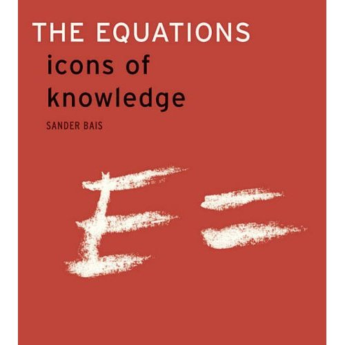

The Concept of Notation
... by far the most important step
The King denounced it [writing] What have we done to ourselves?The term language has a technical meaning. The term notation is less precise -- it has visual and psychological components that we do not, at present, know how to quantify. Like poetry, a notation can be appreciated and discussed. Like poetry, a good notation is often a surprise, even a delight. Like poetry, a good notation reaches past the tedium of mere reason, enabling patterns of thought otherwise inaccessible to our poor meat computers. The power of notation has captured the attention of experts and they have commented thereon. It is my opinion that the appearance of a useful notation has the effect on science akin the effect the appearance of a successful mutation has on nature. A new intellectual plateau is soon populated by those wielding the new mental tool to explore in detail a vista formerly only glimpsed, and then only by genius. To give substance to my claims, I offer some of the notations that have opened vistas to me.
There are others that I believe have compelling stories, but lead to places I have not yet been. One of the most convincing demonstrations of the power of notation in mathematics and physics is in the lovely book The Equations, icons of knowledge by Sander Bais. The preceding stories open the possibility that we, in computer science, have deliberately limited our scientific reach by restricting our professional art-form to ASCII. The compelling elegance reached in other arts and sciences has eluded us. Occasional glimpses of deeper resonances have peeked through the pedestrian keyboard with the appearance of APL and Unicode (charts) (wiki) and TeX. What to do about it?Presuming that computer users need notation, there are several technical problems to solve. Their notation must also be computer readable, writable and efficiently executable. Fonts are part of the answer. Easy-to-write compilers is another. I took on the latter task. I am still waiting for Leibniz. Meanwhile, a classmate of mine invented M for MATLAB and it turned out to have an evolutionary niche. It is even taught as a beginning programmang language (at Cornell, for instance). Now, two decades later, I am rewriting his compiler. You cannot be impatient when you are waiting for a notation to be born.
|